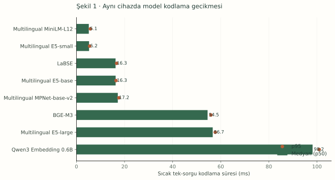
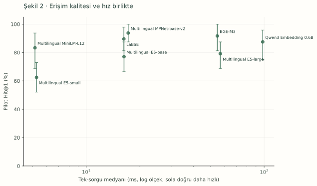
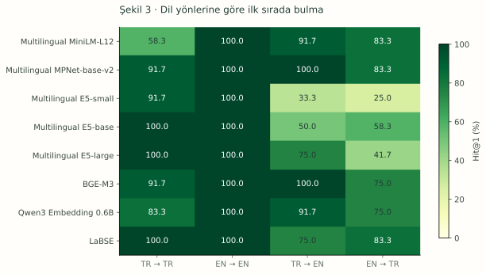

Karar desteği raporu · 14 Kasım 2026 · Sürüm 2. Amaç, ilk prototipte denenecek modeli çalışma mantığı, dil kapsamı, erişim kanıtı ve yerel çalışma maliyetiyle değerlendirmektir. Bu rapor bir modelin seçildiğini bildirmez. Bölüm 1–9 embedding modellerinin mevcut inceleme ve pilotunu; bölüm 10, ayrı embedding modeli olmadan yerel üretici LLM kullanma araştırmasını içerir. LLM'lerin yerel başarısı ve hızı henüz ölçülmedi.
1. Araştırma sorusu ve kapsam
Soru: Kişisel Markdown/düz metin kaynaklarında, aynı dilde farklı ifadelerle ve Türkçe–İngilizce arasında sorulan soruları ilgili kaynakla buluşturmak için hangi model uygun bir başlangıç sağlar?
Dokuz ana aday, yerel tek vektörlü erişim düzeninde karşılaştırılır. Ayrıca çok vektörlü Jina-ColBERT v2 ve ikinci aşama BGE reranker ayrı görevler olarak açıklanır. Liste tüm güncel modelleri kapsamaz: önceki taramadaki ailelerden küçük, orta ve büyük temsilciler; cümle benzerliği ve erişim eğitimi; encoder ve decoder; farklı dil hizalama tarifleri seçildi. Yerel çalıştırılabilirlik ve açık model belgeleri dahil edilme ölçütüdür. Büyük Qwen3 4B/8B sürümleri ayrıca kaynaklarda bulunabilir; 16 GB cihaz için ilk pilotun ana adayları arasına alınmadı.
Çıktı türleri: Model belgesindeki özellik, yayımlanan benchmark sonucu, bu bilgisayarda ölçülen sonuç ve araştırmacının tercih puanı farklı etiketlerle gösterilir. Bu dört tür bilgi birbirinin yerine geçmez. Özellikle dil sayısı ve vektör boyutu, erişim doğruluğu puanı değildir.
2. Modeller anlamı nasıl temsil ediyor?
Çalıştırma zinciri: Metin → tokenizer → token kimlikleri → bağlama duyarlı Transformer → havuzlama → vektör normalleştirme → benzerlik puanı.
Tokenizer sözcükleri veya sözcük parçalarını kimliklere dönüştürür. Transformer, bir parçanın temsilini çevresindeki metne göre değiştirir. Havuzlama, değişken sayıdaki tokenı sabit boyutlu tek bir vektöre indirger. Bu aşama bütün modellerde aynı değildir: ortalama, CLS veya son token kullanılabilir. Bu yüzden yalnız aynı sayıda boyut üretmeleri modelleri eşdeğer yapmaz. Model kartları: E5, LaBSE, Qwen3
Eğitim ile çalışma anını ayır
Karşılaştırmalı eğitimde ilgili iki metnin vektörleri yakınlaştırılır; ilgisiz veya zor negatif örneklerle aralarının açılması hedeflenir. Pozitif çiftin ne olduğu önemlidir: aynı cümlenin çevirisi, iki paraphrase ve bir soru–cevap kaynağı farklı öğrenme sinyalleridir. Hazır model kullanırken bu eğitim yeniden yapılmaz; öğrenilmiş ağırlıklar bir ileri geçişte vektör üretir. Multilingual E5
Öğretmen–öğrenci dil hizalamasında, tek dildeki öğretmenin ürettiği vektöre hem özgün cümlenin hem çevirisinin öğrenci çıktısının yaklaşması istenir. Böylece farklı dillerde benzer ifadeler ortak uzayda yer alabilir. Ancak çeviri eşleme ile bir gerekçe arayan soruya kaynak bulma aynı hedef değildir. Reimers ve Gurevych, 2020
Aynı omurga, farklı davranış: MiniLM ile E5-small benzer büyüklükte bir omurga kullanırken eğitimleri ve girdi rolleri farklıdır. Birini hız veya boyut açısından tanımak diğerinin erişim kalitesini önceden belirlemez. MiniLM kartı, E5-small kartı
Benzerlik hesabı
u = model(soru)
v = model(kaynak parçası)
cos(u, v) = (u · v) / (||u|| × ||v||)
u ve v L2-normalleştirilmişse: cos(u, v) = u · v
Kosinüs bir karşılaştırma ölçüsüdür; anlam ilişkisini öğrenen modeldir. Yüksek kosinüs, kaynağın doğru/güncel olduğunu veya soruyu cevapladığını tek başına kanıtlamaz. Modellerin skor dağılımları farklı olabilir: bir modelde 0,85 görmek, başka modeldeki 0,70’ten daha doğru olduğu anlamına gelmez. E5’in model kartı yüksek benzerlik aralığının eğitim sıcaklığıyla ilişkisini ayrıca açıklar. E5 FAQ
Dört belirgin çalışma mantığı
| Aile | Havuzlama / eğitim fikri | Bu rapordaki örnekler |
|---|---|---|
| Çok dilli cümle temsili | Öğretmen–öğrenci / benzer cümle hizalama; ortalama havuzlama | MiniLM, multilingual MPNet |
| Soru–kaynak erişim kodlayıcısı | Karşılaştırmalı erişim eğitimi; rol önekleri veya özel erişim çıktıları | E5 ailesi, BGE-M3 |
| Çeviri hizalama | Çeviri çiftlerini ortak uzayda sıralama; CLS ve dönüşüm katmanı | LaBSE |
| Talimat veya göreve özgü temsil | Son-token kullanan decoder ya da göreve özgü LoRA adaptörü | Qwen3 Embedding, Jina v3 |
BGE-M3’ün yoğun, seyrek ve çok vektörlü çıktıları aynı şey değildir; burada yalnız yoğun kullanım ölçülür. Jina v3’te soru ve kaynak için ayrı görev adaptörleri vardır. BGE-M3 yayını, Jina v3 yayını
Kartları okumak için küçük sözlük
Ortalama havuzlama, token çıktılarını dikkat maskesini gözeterek ortalar. CLS, metnin başlangıcındaki özel tokenın bağlama duyarlı çıktısını kullanır. Son-token havuzlama, nedensel decoder’ın önceki metni görmüş son geçerli konumunu seçer. Hangi seçeneğin doğru olduğu modelin eğitim tarifine bağlıdır. E5 kullanımı, LaBSE modülleri, Qwen3 mimarisi
LoRA adaptörü, ortak ağın yanında göreve özgü küçük ağırlık değişiklikleri kullanır; soru ve kaynak için farklı adaptörler seçilebilir. Matryoshka eğitimi, vektörün daha kısa alt boyutlarının da işe yaramasını hedefler; her modelin vektörünü rastgele kısaltma izni değildir. Damıtma, öğrencinin öğretmen modelin temsilini öğrenmesidir. Jina v3, çok dilli damıtma
3. Adaylar ve teknik özellikler
| Model | Parametre (M) | Vektör | Giriş tokenı | Dil kapsamı (beyan) | FP32 ağırlık (GiB) | Lisans |
|---|---|---|---|---|---|---|
| Multilingual MiniLM-L12 | 117.7 | 384 | 128 | 50 | 0.44 | Apache-2.0 |
| Multilingual MPNet-base-v2 | 278.0 | 768 | 128 | 50 | 1.04 | Apache-2.0 |
| Multilingual E5-small | 117.7 | 384 | 512 | 100 | 0.44 | MIT |
| Multilingual E5-base | 278.0 | 768 | 512 | 100 | 1.04 | MIT |
| Multilingual E5-large | 559.9 | 1024 | 512 | 100 | 2.09 | MIT |
| BGE-M3 | 567.8 | 1024 | 8,192 | 100+ | 2.12 | MIT |
| Qwen3 Embedding 0.6B | 595.8 | 1024 | 32,768 | 100+ | 2.22 | Apache-2.0 |
| LaBSE | 471.5 | 768 | 256 | 109 | 1.76 | Apache-2.0 |
| Jina Embeddings v3 | 572.3 | 1024 | 8,192 | 100+; 30 odak dil | 2.13 | CC BY-NC 4.0 |
Boyut ve bellek: Milyon parametre sayısı yaklaşık ölçeği gösterir. Çalıştırılan modellerde yüklenen bütün modüllerin parametreleri sayıldı; ek dönüşüm katmanları nedeniyle Hub metadata toplamıyla küçük farklar olabilir. FP32 ağırlık hesabı parametre × 4 bayttır; gerçek RAM ölçümü değildir. Çalışma tamponları, tokenizer, kütüphaneler ve uzun girdinin ara tensörleri buna eklenir. Embedding vektör boyutu ile model ağırlık büyüklüğü farklıdır. Model revision kimlikleri metadata kaydında, kullanılan paket sürümleri kilit dosyasında bulunur.
Giriş uzunluğu: MiniLM ve multilingual MPNet paketlerinde varsayılan 128; LaBSE paketinde 256; E5’te 512 token kullanılır. Model omurgasının pozisyon kapasitesi farklı olabilir. BGE-M3 ve Jina v3’ün 8K, Qwen3’ün 32K kapasitesi, bu kısa metin deneyinde o uzunlukta sınandıkları anlamına gelmez. MiniLM, MPNet, LaBSE
Damıtılmış cümle modeliM01 · Multilingual MiniLM-L12
Kimlik: sentence-transformers/paraphrase-multilingual-MiniLM-L12-v2 · Aile: Damıtılmış cümle modeli
Nasıl çalışır? 12 katmanlı çok dilli MiniLM kodlayıcısı, token çıktılarını ortalayarak 384 boyutlu cümle vektörü üretir. Öğretmen–öğrenci yaklaşımında farklı dillerdeki benzer ifadelerin ortak temsile yaklaşması hedeflenir.
Nasıl öğrenmiş? Çok dilli cümle benzerliği / paraphrase kullanımı; doğrudan soru–belge erişimi için E5 ile aynı eğitim amacı varsayılmamalı.
Çalıştırma tarifi: İki metin ayrı kodlanır; ortalama havuzlama ve L2 normalleştirme sonrası kosinüs kullanılır. query:/passage: ön eki eklenmez.
Hız ve kapasite yorumu: Küçük gizli boyutu kısa cümleler için düşük hesap yükü sağlar. Paket varsayılanı 128 token olduğundan uzun paragraflar kırpılabilir.
Türkçe–İngilizce kanıtı: Türkçe ve İngilizce desteklenen diller arasında. TR-MTEB sonucu var; diller arası bilgi ihtiyacı için yerel pilot ayrıca gösteriliyor.
Kaynaklar: Model kartı · Yöntem yayını · sabit revision e8f8c211226b.
Damıtılmış cümle modeliM02 · Multilingual MPNet-base-v2
Kimlik: sentence-transformers/paraphrase-multilingual-mpnet-base-v2 · Aile: Damıtılmış cümle modeli
Nasıl çalışır? Adında MPNet geçmesine rağmen dağıtılan çok dilli öğrenci modelin omurgası XLM-RoBERTa’dır. 12 katman ve ortalama havuzlama ile 768 boyutlu vektör oluşturur.
Nasıl öğrenmiş? Cümle benzerliği için çok dilli temsil aktarımı. Model adından hareketle çalışma sırasında MPNet mimarisi kullandığı söylenmemeli; yayımlanan modül yapısı esas alınır.
Çalıştırma tarifi: Metinleri ayrı kodla, ortalama havuzla ve normalleştir; önek yok. Yerel deneyde doğrudan Sentence Transformers paketi kullanıldı.
Hız ve kapasite yorumu: MiniLM’den geniş ara temsiller daha çok hesap gerektirir. Varsayılan 128 token sınırı sürer; büyük vektör tek başına daha iyi erişim demek değildir.
Türkçe–İngilizce kanıtı: TR-MTEB’de STS ve retrieval ayrı raporlanır; cümle benzerliği başarısı kaynak erişimi başarısıyla aynı değildir.
Kaynaklar: Model kartı · Yöntem yayını · sabit revision 4328cf26390c.
Erişim için eğitilmiş kodlayıcıM03 · Multilingual E5-small
Kimlik: intfloat/multilingual-e5-small · Aile: Erişim için eğitilmiş kodlayıcı
Nasıl çalışır? MiniLM tabanlı 12 katmanlı kodlayıcı. Tokenların dikkat maskeli ortalaması cümle vektörünü oluşturur. Sorgu ve ilgili kaynak, karşılaştırmalı eğitimde yakınlaştırılır; ilgisiz örnekler uzaklaştırılır.
Nasıl öğrenmiş? Zayıf gözetimli çok dilli metin çiftleriyle ön eğitim, ardından etiketli veriyle ince ayar. Soru ve kaynak rollerini ayıran erişim düzeni vardır.
Çalıştırma tarifi: Türkçe dahil soruya query: , kaynağa passage: ekle; 384 boyutlu çıktıyı normalleştir. Simetrik cümle çifti tanısında ikisine de query: kullanıldı.
Hız ve kapasite yorumu: MiniLM ile aynı parametre mertebesi, farklı eğitim hedefi. 512 token metin sınırı; az katman genişliği kaliteyi sınırlayabilir.
Türkçe–İngilizce kanıtı: Çok dillilik iddiası ile TR-MTEB/TR-TEB Türkçe erişim sonuçları ayrı kanıtlar. Bu benchmarklar TR↔EN açık uçlu erişimi bütünüyle doğrulamaz.
Kaynaklar: Model kartı · Yöntem yayını · sabit revision 614241f622f5.
Erişim için eğitilmiş kodlayıcıM04 · Multilingual E5-base
Kimlik: intfloat/multilingual-e5-base · Aile: Erişim için eğitilmiş kodlayıcı
Nasıl çalışır? XLM-RoBERTa-base tabanlı 12 katmanlı kodlayıcı; 768 boyutlu token temsilleri ortalanır. E5-small ile aynı erişim ailesindedir; ağ daha geniştir.
Nasıl öğrenmiş? Çok dilli karşılaştırmalı ön eğitim ve gözetimli ince ayar. Pozitif soru–kaynak çiftini ayırt etmek için negatif örneklerden yararlanır.
Çalıştırma tarifi: Soru query: , kaynak passage: önekiyle kodlanır; normalleştirilmiş vektörlerin nokta çarpımı kosinüse eşittir.
Hız ve kapasite yorumu: Small’a göre daha geniş ağ ve daha büyük ağırlıklar. 512 token sınırı değişmez. Önceki sohbet önerisi başlangıç adayıydı; nihai seçim değildir.
Türkçe–İngilizce kanıtı: Türkçe için iki ayrı hakemli benchmarkta sonuç var. İngilizce ve diller arası kullanım desteği kendi veri kümemizde ayrıca sınanmalıdır.
Kaynaklar: Model kartı · Yöntem yayını · sabit revision d12875059715.
Erişim için eğitilmiş kodlayıcıM05 · Multilingual E5-large
Kimlik: intfloat/multilingual-e5-large · Aile: Erişim için eğitilmiş kodlayıcı
Nasıl çalışır? XLM-RoBERTa-large omurgasında 24 katman ve 1024 boyutlu temsil. Ortalama havuzlama ile tek vektör üretir; small/base ile yöntem ailesi aynıdır.
Nasıl öğrenmiş? E5’in çok dilli karşılaştırmalı eğitim tarifinin daha büyük ağ üzerindeki uygulaması. Daha büyük ağ, veri kümesindeki her soru için daha iyi sonuç garantilemez.
Çalıştırma tarifi: query:/passage: rolleri; dikkat maskeli ortalama, ardından normalleştirme. Bu model large-instruct sürümüyle karıştırılmamalı.
Hız ve kapasite yorumu: Daha derin ve geniş ağ daha çok işlem ve ağırlık belleği gerektirir. Buna rağmen giriş sınırı 512 token olarak kalır.
Türkçe–İngilizce kanıtı: TR-MTEB ve TR-TEB’de large/base/small aynı çalışma içinde karşılaştırılabilir. Çalışmalar arasındaki ham puanlar birleştirilemez.
Kaynaklar: Model kartı · Yöntem yayını · sabit revision 3d7cfbdacd47.
Çok işlevli erişim kodlayıcısıM06 · BGE-M3
Kimlik: BAAI/bge-m3 · Aile: Çok işlevli erişim kodlayıcısı
Nasıl çalışır? XLM-RoBERTa-large tabanlı ortak omurga üç erişim çıktısını destekler: yoğun tek vektör, öğrenilmiş seyrek terim ağırlıkları ve token düzeyinde çok vektör. Yoğun çıkışta CLS temsili kullanılır.
Nasıl öğrenmiş? Birlikte öğrenilen farklı erişim sinyalleri, öz damıtma ile birbirini besler. Bu raporun yerel deneyi yalnız yoğun çıkışı sınar.
Çalıştırma tarifi: Standart dense kullanımında query:/passage: öneki eklenmez. Yoğun vektör normalleştirilir. Seyrek/çok vektörlü kullanımı ayrı deney gerektirir.
Hız ve kapasite yorumu: 8192 token alabilmesi kısa sorunun o uzunlukta işleneceği anlamına gelmez. Uzun girdi seçildiğinde hesap ve RAM artar; başlık/bölüm ayrımı hâlâ değerlidir.
Türkçe–İngilizce kanıtı: TR-TEB’de Türkçe erişim sonucu mevcut. MIRACL model kartı değerlendirmesi sonradan düzeltilmiştir; kart/sürüm kaydı önemlidir.
Kaynaklar: Model kartı · Yöntem yayını · sabit revision 5617a9f61b02.
Talimatlı decoder embeddingM07 · Qwen3 Embedding 0.6B
Kimlik: Qwen/Qwen3-Embedding-0.6B · Aile: Talimatlı decoder embedding
Nasıl çalışır? 28 katmanlı Qwen3 decoder omurgası, nedensel dikkat kullanır. Embedding, son geçerli tokenın son katman durumundan elde edilir. Her giriş için vektör üretir; bu kullanımda yanıt metni üretmez.
Nasıl öğrenmiş? Talimat içeren karşılaştırmalı eğitim; sentetik ve etiketli veri aşamaları. Matryoshka eğitimi farklı çıktı boyutlarını destekler.
Çalıştırma tarifi: Sorunun önüne İngilizce görev talimatı eklenir, kaynak yalın kalır. Pilot aynı talimatı bütün sorularda kullanır; 1024 boyut ve FP32 seçildi.
Hız ve kapasite yorumu: Talimatın tokenları da işlenir. Üretici model kökeni, bu modelin sohbet modeli gibi kullanılacağı anlamına gelmez. Yerel CPU maliyeti ölçülmeli.
Türkçe–İngilizce kanıtı: 100+ dil desteği ve TR-TEB sonucu var. Çok dilli MTEB ortalaması doğrudan Türkçe erişim veya TR↔EN başarı puanı değildir.
Kaynaklar: Model kartı · Yöntem yayını · sabit revision 97b0c614be4d.
Çeviri eşleme odaklı kodlayıcıM08 · LaBSE
Kimlik: sentence-transformers/LaBSE · Aile: Çeviri eşleme odaklı kodlayıcı
Nasıl çalışır? Çok dilli BERT tabanlı çift kodlayıcı. Sentence Transformers paketinde CLS havuzlama, dense+tanh dönüşümü ve normalleştirme bulunur.
Nasıl öğrenmiş? Maskeli dil modelleme, çeviri dili modelleme ve çift kodlayıcı çeviri sıralaması; ek marjlı amaçla diller arası cümle hizalama.
Çalıştırma tarifi: Önek olmadan iki metni aynı ortak uzaya kodla. Paket varsayılanı 256 token; omurganın daha büyük pozisyon kapasitesiyle karıştırılmamalı.
Hız ve kapasite yorumu: 12 katman olmasına karşın geniş sözlük ağırlık belleğini artırır. Çeviri karşılığı bulma, bir sorunun gerekçesini belge içinde bulmayla aynı görev değildir.
Türkçe–İngilizce kanıtı: TR-MTEB’de bitext ve retrieval ayrı ölçülür; yüksek bitext puanını kaynak erişimi kalitesi diye yorumlamamalı.
Kaynaklar: Model kartı · Yöntem yayını · sabit revision 836121a0533e.
Göreve özel LoRA kodlayıcısıM09 · Jina Embeddings v3
Kimlik: jinaai/jina-embeddings-v3 · Aile: Göreve özel LoRA kodlayıcısı
Nasıl çalışır? XLM-RoBERTa türevi omurgada RoPE ve göreve özel küçük LoRA adaptörleri. Ortalama havuzlama ile tek vektör; Matryoshka eğitimi boyut azaltmayı destekler.
Nasıl öğrenmiş? Erişim, eşleme ve diğer işler için farklı adaptörlerle çok görevli embedding eğitimi. Her görevde aynı adaptörü kullanmak doğru kullanım değildir.
Çalıştırma tarifi: Soru için retrieval.query, kaynak için retrieval.passage seçilir. Kaynak kartı özel model kodu yüklemeyi gerektirir; bu pilotta çalıştırılmadı.
Hız ve kapasite yorumu: Türkçe, odaklanılan 30 dil arasındadır; omurga yaklaşık 100 dil destekler. CC BY-NC lisansı ve özel kod gereksinimi uygulama seçiminde dikkate alınmalı.
Türkçe–İngilizce kanıtı: TR-TEB’de Türkçe sonuç mevcut. Yerel hız ve TR↔EN tanı puanı eksik; ölçülmüş modellerin deney sıralamasına katılmaz.
Kaynaklar: Model kartı · Yöntem yayını · sabit revision ab036b023d30.
Başka bir aşamada kullanılabilecek iki model
BGE reranker v2 M3: Soruyla aday kaynağı aynı girişte değerlendirerek ilgililik puanı üretir. Önceden hazırlanmış bağımsız kaynak vektörü yerine her yeni soru–aday çifti için model çalışır. Bu nedenle kısa aday listesini yeniden sıralama rolünde düşünülür. Tahmini iş yükü aday sayısıyla artar; bu raporda yerel milisaniye veya kalite puanı üretilmedi. Çok dilli model kartı başlangıç kanıtıdır; bizim TR↔EN başarımız ayrıca ölçülmelidir. Teknik uygunluk: yeniden sıralama rolü için 5/5, ilk aşama tek vektörlü kaynak araması için 1/5. Bunlar rol uyum notlarıdır. Resmî kart
Jina-ColBERT v2: Her token için vektör üretir; sorgu tokenlarının belge tokenlarıyla en iyi eşleşmelerini MaxSim ile birleştirir. Tek vektörden daha ayrıntılı etkileşim, ayrıca daha çok vektör ve eşleştirme işi demektir. Yerel hız ölçülmedi. Teknik uygunluk: çok vektörlü erişim deneyi için 5/5, mevcut tek vektörlü karşılaştırmaya doğrudan takılabilirlik için 2/5. TR-TEB’in bu model için kullandığı tek vektörlü yaklaşımı gerçek ColBERT çıkarımı diye yorumlamadık. Resmî kart, TR-TEB yöntem sınırı
4. Puanlama: özellik, tercih ve başarı
Bütün adaylar için teknik ön değerlendirme
Bu puan model doğruluğu veya akademik benchmark skoru değildir. Prototipe başlama maliyetini ve görevle uyumunu açık kurallarla sayısallaştıran araştırmacı tercihidir. Kalite henüz hesaba girmediğinden tek başına model seçmekte kullanılmamalı.
| Ölçüt | Ağırlık | 1–5 notunun kuralı |
|---|---|---|
| Eğitim hedefinin görevle uyumu | %35 | Açık soru–kaynak erişimi 5; genel paraphrase/cümle temsili 3; çeviri hizalama odaklı 2 |
| Eşit token uzunluğunda tahmini hesap yükü | %25 | Sözlük embedding ağırlıkları çıkarıldıktan sonra ≤30M: 5; ≤100M: 4; ≤200M: 3; ≤450M: 2; daha fazla: 1 |
| Ağırlık belleği | %15 | FP32 ≤0,6 GiB: 5; ≤1,2: 4; ≤2,4: 3; ≤4: 2; daha fazla: 1 |
| Türkçe ve İngilizce destek koşulu | %15 | İki dil de destekleniyor: 5; destek belirsiz: 2; tek dil: 1. Buradaki ana adayların hepsi 5; kalite iddiası değil |
| Yerel entegrasyon | %10 | Standart yükleme ve MIT/Apache ağırlıklar: 5; özel model kodu ve ticari olmayan ağırlık lisansı: 3 |
Formül: ön puan = Σ(ağırlık × ölçüt notu / 5). Tahmini hesap yükü, gecikme ölçümü değildir: embedding tablosu çoğunlukla seçmeli okunduğu için toplam parametreden ayrı bir kaba gösterge kullanıldı. Dikkat işlemi, bellek bant genişliği, talimat uzunluğu, backend ve donanım farklılıkları bu kestirimi değiştirebilir. Parametre büyüklüğünü doğrudan milisaniyeye çevirmedik.
| Model | Görev /5 | Hız kestirimi /5 | Bellek /5 | TR+EN desteği /5 | Entegrasyon /5 | Ön puan /100 |
|---|---|---|---|---|---|---|
| Multilingual MiniLM-L12 | 3 | 5 | 5 | 5 | 5 | 86.0 |
| Multilingual MPNet-base-v2 | 3 | 4 | 4 | 5 | 5 | 78.0 |
| Multilingual E5-small | 5 | 5 | 5 | 5 | 5 | 100.0 |
| Multilingual E5-base | 5 | 4 | 4 | 5 | 5 | 92.0 |
| Multilingual E5-large | 5 | 2 | 3 | 5 | 5 | 79.0 |
| BGE-M3 | 5 | 2 | 3 | 5 | 5 | 79.0 |
| Qwen3 Embedding 0.6B | 5 | 2 | 3 | 5 | 5 | 79.0 |
| LaBSE | 2 | 4 | 3 | 5 | 5 | 68.0 |
| Jina Embeddings v3 | 5 | 2 | 3 | 5 | 3 | 75.0 |
Ölçülmüş adaylar için değiştirilebilir karar puanı
Yerel pilotu tamamlanan modeller için ikinci bir puan hesaplanır. Varsayılan tercih %65 erişim, %25 hız, %10 ağırlık belleği. Sayfadaki ağırlıklar değiştirilebilir. Bu bir araştırmacı karar kuralıdır; öğrenilmiş veya doğrulanmış bir kalite metriği değildir.
Q = 100 × pilot Hit@1
H = min(100, 100 × 10 ms / ölçülen tek-sorgu medyanı)
B = min(100, 100 × 0,5 GiB / hesaplanan FP32 ağırlık büyüklüğü)
Karar puanı = 0,65 Q + 0,25 H + 0,10 B
10 ms ve 0,5 GiB, bu raporun tercih çıpalarıdır; kullanıcının kabul edilmiş zorunlu limitleri değildir. Ön puan ile deney karar puanı farklı şeylerdir. Ölçülmeyen modele yerel başarı/hız uydurulmaz ve deney sıralamasında boş bırakılır. Farklı ağırlıklarla sıralama değişiyorsa “tek en iyi model” iddiası özellikle zayıftır.
5. Yerel pilotun yöntemi
Ortam: Apple M3, 16 GiB birleşik bellek. CPU, FP32, dört PyTorch iş parçacığı; GPU/MPS kullanılmadı. Aynı anda bir model çalıştırıldı. Model indirme ve ilk yükleme süreleri sıcak sorgu gecikmesine dahil değil. Sonuçlarda işletim sistemi, Python ve kütüphane sürümleri ayrıca kaydedildi.
Veri: 36 kısa kaynak paragrafı; 24 hedef kaynak ve 12 yakın ama farklı yanıltıcı kaynak. 48 soru, TR→TR / EN→EN / TR→EN / EN→TR yönlerinde 12’şer örnek. Okun sol tarafı soru dilini, sağ tarafı kaynak dilini gösterir. Her hedef için iki dilde soru var. Dolayısıyla 48 soru istatistiksel olarak tamamen bağımsız değil. Ayrıca benzer ifade, çeviri, olumsuzlama, farklı proje ve farklı gerekçeyi içeren 8 cümle çifti var.
Veri kökeni: Tamamı bu rapor için asistan tarafından yazılmış sentetik metinler ve etiketler. Kullanıcının kişisel belleği okunmadı. Etiketler model sonuçlarından önce tanımlandı ve dosya hash’i kaydedildi; sonuçlar görüldükten sonra iyileştirilmedi. Bağımsız insan anotasyonu/hakem kontrolü yapılmadı. Bu, formal TR-MTEB/TR-TEB veya temsil gücü kanıtlanmış ürün testi değildir. Veri, üreten kod, hash
Çıkarım: Modellerin kendi rol düzenleri kullanıldı: E5 query/passage önekleri, Qwen sabit görev talimatı, diğerlerinde tanımlı varsayılan girdi. Jina v3 yerelde çalıştırılmadı. BGE yalnız dense, Qwen tam 1024 boyutla değerlendirildi. Karşılaştırma farklı hazır modellerin kendi kullanım tariflerinindir; önekler ve tokenizer nedeniyle token sayıları aynı değildir. Kırpılan örnek sayısı sonuç dosyalarında bulunur.
Kaynak sıralaması: Normalleştirilmiş vektörlerde tam nokta çarpımı. Filtre, BM25, çeviri, reranker, ince ayar veya ANN eklenmedi. Her soru için bir ilgili kaynak etiketi var. Sonuç seçimi etikete bakmaz; sıralama bittikten sonra kaynak kimliğiyle değerlendirilir.
| Ölçüm | Tanımı |
|---|---|
| Hit@1 | Etiketli kaynak ilk sırada mı? |
| Hit@3 | Etiketli kaynak ilk üçte mi? |
| MRR | İlgili kaynağın sırasının tersinin ortalaması |
| nDCG@5 | Tek ilgili kayıt için ilk beşte 1/log2(sıra+1), diğer durumda 0 |
| Belirsizlik aralığı | 24 hedef kaynak kümesi üzerinden 2.000 tekrarlı bootstrap; %95 yüzdelik aralık. Kümenin gerçek dünyayı temsil ettiğini kanıtlamaz |
Hız protokolü: Isınma sonrası 12 soru × 3 tur = 36 tek-sorgu kodlama ölçümü. 8 cümle çifti × 3 tur = 24 iki-metni birlikte kodlama ölçümü. Aynı 32 soruluk işte 5 tekrar üzerinden toplu kodlama hızı. Tokenizasyon ve vektör üretimi dahil; ilk model yükleme ve disk/indeks araması hariç. Süreler p50/medyan ve p95 ile kaydedilir. P95 az örneğe dayalı tanı değeridir; servis seviyesi taahhüdü değildir.
6. Sonuçlar: hız ve kaynak erişimi
Tamamlanan ölçüm: 8/9 ana aday. Bu tanı kümesinde en yüksek Hit@1 Multilingual MPNet-base-v2 için %93.8; 24 kaynak kümesiyle bootstrap aralığı %87.5–%100.0. En düşük sıcak tek-sorgu medyanı Multilingual MiniLM-L12 için 5.1 ms. Bunlar bu küçük küme ve CPU düzenine aittir.
| Model | Hit@1 (%) | Hit@3 (%) | MRR | nDCG@5 | Soru p50 (ms) | Soru p95 (ms) | 2 metin p50 (ms) | Toplu metin/sn |
|---|---|---|---|---|---|---|---|---|
| Multilingual MiniLM-L12 | 83.3 | 95.8 | 0.897 | 0.916 | 5.1 | 5.8 | 5.7 | 888.7 |
| Multilingual MPNet-base-v2 | 93.8 | 100.0 | 0.965 | 0.974 | 17.2 | 17.6 | 17.4 | 274.1 |
| Multilingual E5-small | 62.5 | 79.2 | 0.737 | 0.753 | 5.2 | 5.5 | 6.0 | 810.3 |
| Multilingual E5-base | 77.1 | 97.9 | 0.880 | 0.911 | 16.3 | 16.4 | 18.3 | 253.0 |
| Multilingual E5-large | 79.2 | 100.0 | 0.892 | 0.920 | 56.7 | 57.7 | 70.9 | 73.1 |
| BGE-M3 | 91.7 | 100.0 | 0.958 | 0.969 | 54.5 | 55.9 | 56.2 | 80.2 |
| Qwen3 Embedding 0.6B | 87.5 | 100.0 | 0.934 | 0.951 | 98.2 | 100.9 | 77.1 | 24.9 |
| LaBSE | 89.6 | 97.9 | 0.943 | 0.957 | 16.3 | 16.7 | 16.8 | 269.7 |
| Jina Embeddings v3 | Ölçülmedi | — | — | — | — | — | — | — |









Hızın yorumu: İki cümleyi sıfırdan kodlamak ile önceden kodlanmış iki vektörün benzerliğini hesaplamak farklı işlerdir. Burada çift süresi ilkini ölçer. Kaynak vektörleri hazırken yeni soru için esas model işi tek sorguyu kodlamaktır; büyük koleksiyonda arama, dosya okuma ve sonuç hazırlama buna eklenir. Bu pilot 36 kaynaktan büyük arama gecikmesini ölçmez.
Pratik süre kestirimi: Tablodaki metin/sn değeri bu 32 kısa metinlik toplu işten ölçülür. Aynı uzunluk, batch ve cihaz koşullarında N / metin_sn ilk kodlama süresi için kaba kestirimdir. Sayfa bu hesabı gösterir; farklı uzunlukta 10.000 gerçek belge veya bütün sistem gecikmesi için garanti sayı değildir. Yerel ölçümü olmayan Jina v3 için eşit uzunlukta E5-large/BGE sınıfı bir yük beklemek yapısal yorumdur; milisaniye tahmini üretmedik.
7. Yayımlanan akademik kanıt
TR-MTEB — aynı çalışmada altı aday
| Model | Retrieval · nDCG@10 ×100 | STS · Spearman ×100 | Bitext · F1 ×100 |
|---|---|---|---|
| Multilingual MiniLM-L12 | 46.57 | 78.41 | 93.67 |
| Multilingual MPNet-base-v2 | 49.27 | 82.18 | 96.06 |
| Multilingual E5-small | 56.53 | 76.18 | 97.46 |
| Multilingual E5-base | 58.29 | 78.37 | 98.51 |
| Multilingual E5-large | 60.62 | 81.18 | 99.43 |
| LaBSE | 46.47 | 71.75 | 99.53 |
Kaynak: Baysan ve Güngör (2025), Tablo 2. Retrieval, STS ve bitext ayrı görev/ölçülerdir; aralarında aritmetik ortalama üretmedik. Çeviri eşleme puanını açık uçlu kaynak bulma başarısı diye yorumlamıyoruz. MiniLM’nin vektör boyutu makalede 768 görünür; model kartı/config 384 gösterdiğinden teknik özellikte 384 esas alındı. Tam metin
TR-TEB — daha yeni bir Türkçe karşılaştırma
| Model | Retrieval · nDCG@10 ×100 | STS · Spearman ×100 |
|---|---|---|
| Multilingual E5-small | 55.40 | 72.69 |
| Multilingual E5-base | 56.79 | 73.58 |
| Multilingual E5-large | 58.57 | 75.85 |
| BGE-M3 | 59.30 | 77.08 |
| Qwen3 Embedding 0.6B | 50.81 | 70.21 |
| Jina Embeddings v3 | 57.90 | 79.31 |
Kaynak: Arslan ve ark. (LREC 2026), Tablo 2/4. Bu çalışma Türkçe görevleri değerlendirir; burada verilen retrieval sütunu, TR↔EN açık uçlu erişimin birebir ölçümü değildir. TR-MTEB ile veri, metin uzunlukları, değerlendirme ve model ayarları farklıdır; iki tablonun puanlarını aynı ligde sıralamadık. Jina-ColBERT’in tek vektörle değerlendirilmesi özgün yöntemi temsil etmediği için o satır seçim tablosuna alınmadı. Tam metin
İngilizce ve genel çok dillilik: Model raporlarındaki benchmarklar ek kanıttır. Örneğin Qwen3 kartındaki çok dilli MTEB ortalaması farklı görev ve dillerin bileşimidir. Bu raporun yerel EN→EN ve iki diller arası yön sonuçları ayrı sunulur; farklı MTEB sürümlerinin ortalamalarını bir araya getirmedik. Qwen3 kartı
8. Benzer cümleleri ve hataları inceleme
Sayfadaki cümle çifti ve sorgu seçicileri önceden hesaplanmış pilot sonuçları gösterir; tarayıcıda çalışan canlı NLP modeli değildir. İstenilen serbest metne sonuç üretmez.
“Bulut hizmetlerine izin veriliyor” ile “izin verilmiyor” yüksek benzerlik alırsa bunun nedenlerinden biri aynı konu ve sözcüklerin paylaşılması olabilir. Bu durum mantıksal eşdeğerlik veya izin verildiğine dair kanıt değildir. Aynı şekilde farklı proje adlarıyla benzer cümlelerin yakın olması erişimde yanlış projeyi öne çıkarabilir. Sonuç gezgininde ilk beş kaynak, beklenen kaynak ve sıra görünür.
Cümle çiftlerinin kesin benzerlik etiketi yoktur; kosinüs değerlerinden doğruluk yüzdesi üretilmedi. Kaynak erişiminin doğru/yanlış etiketi ise veri dosyasındaki kaynak kimliğidir. İki gösterim farklı sorulara cevap verir.
9. Seçim için yorum ve sınırlar
Pilot gözlemi: En yüksek Hit@1 değerini Multilingual MPNet-base-v2, en düşük sıcak kodlama medyanını Multilingual MiniLM-L12 verdi. İki ölçüt farklı adayları veya ödünleşimleri öne çıkarabilir. Bu gözlem, yayımlanan Türkçe benchmark sırasını geçersiz kılmaz: veri ve görev çok farklıdır. Özellikle sentetik, kısa ve az kaynaklı bir testteki farklar gerçek kişisel arşivde korunmayabilir.
Tanı örnekleri — sonuçlardan seçilmiş hatalar; ayrı bir test kümesi değildir.
| Model | Soru | Soru metni | Beklenen | İlk dönen | Beklenenin sırası |
|---|---|---|---|---|---|
| Multilingual E5-small | D01-b | Why does Atlas keep medical records on the institution’s own machine? | D01 | N06 | 2 |
| Multilingual MPNet-base-v2 | D04-b | For how long does Kuzey keep the contents of error logs? | D04 | N04 | 2 |
| BGE-M3 | D04-b | For how long does Kuzey keep the contents of error logs? | D04 | N04 | 2 |
Bu raporun desteklediği karar: İlk prototip için adayları daraltmak ve hangi kalite/hız ödünleşiminin kullanıcı için kabul edilebilir olduğunu tartışmak. Modeli otomatik seçmek veya yayımlanan benchmarkı kişisel notlara doğrudan genellemek değil.
Sınırlar: Küçük sentetik veri, bağımsız anotasyon olmaması, yalnız kısa metinler, tek CPU/FP32 backend, sabit çalıştırma sırası ve tekrarların sınırlı olması. Oturumun diğer işleri ve termal durum gecikmeyi etkileyebilir. Kaynak sayısı küçük olduğundan büyük indeks davranışı ölçülmez. Cevapsız soru/ret eşiği, çok kaynaklı gerekçe, uzun dosya parçasını dosyaya toplama ve gerçek notlardaki dil karışımı ayrıca değerlendirilmelidir. Çıkarım başarısı temporal doğruluk/güvenilirlik kararı değildir.
Tekrarlama: deney/veri_olustur.py → deney/kaynaklari_kaydet.py → deney/calistir.py --models ... sırası. İkinci adımı yeniden çalıştırmak yeni revision çözebilir; aynı deneyi tekrarlamak için dağıtılan kaynak-metadata.json korunmalıdır. requirements-lock.txt deney ortamını kaydeder. Model ağırlıkları siteye eklenmedi; ham sonuç JSON’ları, veri ve çizim üreticisi verildi.
10. Yerel LLM ile kaynak seçimi
14 Kasım 2026 · Belge araştırması ve önerilen protokol. Yerel LLM deneyi henüz yapılmadı. Nihai yöntem ve model kararlaştırılmadı. Bu çalışma, hazır bir üretici LLM'nin ayrı embedding modeli olmadan kaynak bulma görevinde kullanılıp kullanılamayacağını inceleyecek. Amaç dosya seçmek ve dosyadaki kanıtı göstermek; serbest cevap üretmek değerlendirme hedefi olmayacak.
Hazır LLM neyi değiştirebilir?
LLM'ye soru ile kimliklendirilmiş kaynak parçaları birlikte verilip ilgililik sırası üretmesi istenebilir. Hazır ağırlıklar kullanılacağı için başlangıçta model eğitimi veya ince ayar gerekmeyecek. LLM de bir NLP modelidir; burada araştırılan ayrım, genel amaçlı üretici LLM ile ayrı bir embedding modelinin kullanım biçimidir.
Sun ve arkadaşlarının RankGPT çalışması, talimat verilen üretici LLM'lerin metinleri yeniden sıralama amacıyla kullanılmasını inceler. Bu, yaklaşım için akademik dayanak sağlar; çalışmanın ChatGPT/GPT-4 bulguları Qwen3-4B veya Gemma 3-4B'nin Türkçe–İngilizce başarısını kanıtlamaz. Sun ve ark., EMNLP 2023
Bir LLM, dosyalar bilgisayarda durduğu için içeriklerini kendiliğinden bilmez. İçeriği uygulamanın modele vermesi veya modelin çağırabileceği okuma/arama araçlarının sağlanması gerekir. İlk deneyde araç kullanan agent yerine sınırları belirli kaynak seçimi ölçülecek; böylece agent döngüsünün etkisi model karşılaştırmasına karışmayacak.
İlk denemeye aday iki üretici model
| Aday | Doğrulanan yerel dağıtım | İncelenecek yön | Henüz bilinmeyen |
|---|---|---|---|
| Qwen3-4B | Ollama qwen3:4b; görülen paket 2,5 GB, Q4_K_M; kısa kimlik 359d7dd4bcda; Apache-2.0 |
Küçük çok dilli üretici model; kaynak kimliği seçme, iki dilde sorgu genişletme ve sıralama | Bu cihazda gecikme, gerçek bellek ve kaynak bulma başarısı |
| Gemma 3-4B | Ollama gemma3:4b; görülen paket 3,4 GB, Q4_K_M; kısa kimlik 68ceab7e468a; Gemma kullanım koşulları |
Farklı model ailesinden karşılaştırma; deneyde yalnız metin girdisi kullanılacak | Aynı görevde Türkçe–İngilizce başarısı, gecikme ve bellek |
Paket boyutları indirme boyutudur; çalışma RAM'i değildir. Tag'ler zamanla değişebilir: deneyde tam yerel manifest kimliği, Ollama sürümü, quantization ve istem şablonu kaydedilecek. Bunlar bütün güncel LLM'lerin kapsamlı listesi veya en iyi iki model iddiası değildir; konuşmada belirlenen iki somut başlangıç adayıdır. Qwen3-4B dağıtımı, Gemma 3-4B dağıtımı
Ollama bir çalıştırma aracıdır; Qwen/Gemma ise modellerdir. Model ve çalıştırıcı indirildikten sonra, bu tasarımın sorgu ve kaynak değerlendirme adımları yerel API üzerinden yürütülebilir. Bağlam kapasitesi ile etkin çalışma ayarı ayrı kaydedilecek: daha büyük bağlamın bellek ihtiyacı artar. Uzun bağlam ilanı, bütün arşivi düşük maliyetle ve hatasız okuyabilme garantisi değildir. Ollama bağlam ayarı
Aynı problem için üç ana düzen
| Düzen | İş akışı | Ayrı embedding modeli | Kritik sınır |
|---|---|---|---|
| A · Doğrudan LLM | Soru + bütün kaynak parçaları → LLM → sıralı dosya kimlikleri ve kanıt | Gerekmeyecek | Koleksiyon bağlama sığmalı; kaynak sayısı ve uzunluğu büyüdükçe okuma maliyeti artabilir |
| B · BM25 + LLM | Soru → BM25 ile adaylar → LLM ile yeniden sıralama ve kanıt seçimi | Gerekmeyecek | BM25'in kaçırdığı kaynak ikinci aşamada geri getirilemez |
| C · Embedding erişimi | Kaynakları bir kez vektörleştir → sorguyu vektörleştir → benzerliğe göre sırala → kaynak metnini getir | Kullanılacak | Farklı ifade/dil başarısı ve yanlış benzerlikler ölçülmeli |
Kontrol düzeni: BM25 tek başına da çalıştırılacak; böylece B'nin başarısındaki değişimin LLM eklenmesinden gelip gelmediği görülebilecek. İlk turda B, özgün sorguyu kullanacak. Ayrı bir B+ genişletme deneyinde LLM Türkçe ve İngilizce alternatif sorgular üretecek; her sorgunun BM25 listeleri sabit RRF kuralıyla birleştirilip aynı sayıda aday seçilecek. Bu ek model çağrısının süresi de toplam maliyete yazılacak. Genişletmenin kazancı varsayılmayacak; hatalı çeviri, özel ad ve terim kayması ayrıca incelenecek.
Küçük ve büyük koleksiyonlar: A yalnız bütün metinlerin gerçekten bağlama sığdığı ortak alt kümede B/C ile karşılaştırılacak. Sığmayan koleksiyonda metni sessizce kesmek yerine A için “bu ayarla uygulanamadı” kaydı tutulacak. Bölümlere ayırıp çok çağrıyla seçim yapmak daha sonra ayrı yöntem olarak incelenebilir. B/C'nin bütün koleksiyondaki sonuçları ile A'nın küçük alt kümedeki sonuçları aynı başarı tablosunda eşdeğer deney gibi sunulmayacak.
LLM'den istenecek çıktı
Model serbest dosya yolu yazmak yerine verilen kaynak kimliklerinden seçecek. Önerilen çıktı sözleşmesi şu yapıda olacak; aşağıdaki JSON bir biçim örneğidir, model sonucu değildir:
{
"no_match": false,
"ranking": [
{"source_id": "S07", "chunk_id": "S07-P02", "evidence_quote": "Kaynak parçasındaki birebir metin."}
]
}
Kimlik dosya yoluna uygulama tarafından çevrilecek. Alıntının ilgili parçada birebir bulunduğu ve kimliğin verilen adaylardan biri olduğu programatik kontrol edilecek. Bu kontrol metnin gerçekten var olduğunu doğrular; soruyla ilgili olduğunu tek başına doğrulamaz. Boş/uydurulmuş alıntı, yinelenen veya aday dışı kimlik ve bozuk JSON ayrı hata sayılacak. Geçersiz sonuç otomatik başarılı kabul edilmeyecek; onarım çağrısı denenirse çağrı sayısı ve süresi raporlanacak.
Ollama'nın JSON Schema çıktısı biçim denetimine yardımcı olabilir; şemaya uymak doğru kaynak seçildiği anlamına gelmez. LLM'nin ürettiği öz güven puanı da kalibre edilmiş doğruluk olasılığı sayılmayacak. Kaynak metinleri veri olarak sınırlandırılacak; içlerinde talimat gibi görünen ifadelerin bulunması ayrıca bir hata senaryosu olacak. Ollama yapılandırılmış çıktı belgesi
Karşılaştırma nasıl adil yapılacak?
Ortak malzeme: Aynı belge anlık görüntüsü, aynı parça sınırları ve aynı sorgu/ilgili dosya etiketleri kullanılacak. Dosya düzeyinde sıralamada aynı dosyanın farklı parçaları tekrar sonuç sayılmayacak; en iyi parça sırası esas alınacak. İlk LLM deneyi mevcut 36 kaynak/48 soruluk sentetik kümede yapılabilir. Bu veri üzerinde önceden sonuçlar incelendiği için bu aşama geliştirme/pilot sayılacak. Model kararı için sonuçlara bakılmadan ayrılmış, bağımsız kontrol edilmiş sorgular ve “ilgili kaynak yok” örnekleri gerekecek.
Dil ve zor örnekler: TR→TR, EN→EN, TR→EN ve EN→TR ayrı raporlanacak. Aynı bilgiye farklı kelimelerle sorulan sorular; olumsuzlama, benzer proje adı, tarih farkı, yakın ama yanlış gerekçe, soruyu cevaplamayan konu benzerliği ve cevapsız sorular kapsanacak. Kaynağın güncelliği ile metnin soruyla ilgisi ayrı etiketler olarak ele alınacak.
Sabit ayarlar: B için geliştirme aşamasında aday sayısı 5/10/20 incelenecek; birincil karşılaştırmanın sayısı değerlendirme kümesine geçmeden sabitlenecek. İstem metni, kaynak gösterim biçimi, çıktı limiti, çalışma bağlamı, sıcaklık ve seed destekleniyorsa seed kaydedilecek. Qwen düşünme modu açık/kapalı sonuçları ayrı koşul olacak. Aday sırasının etkisi sabit rastgele sıralamalarla tekrar ölçülecek; aynı sorunun dil çifti ve tekrarları bağımsız yeni örnekler sayılmayacak.
Uzun bağlamda ilgili metnin konumu performansı etkileyebilir. Lost in the Middle çalışması bu etkiyi incelemek için akademik gerekçe sağlar; bulguları bu iki yerel modele doğrudan taşımak yerine baş/orta/son konum senaryoları ayrıca denenecek. Liu ve ark., TACL 2024
Hangi ölçülerle karar verilecek?
| Boyut | Raporlanacak ölçü | Yorum |
|---|---|---|
| Kaynak bulma | Dosya düzeyinde Hit@1, Recall@5 ve MRR; dört dil yönü ayrı | Birden çok doğru dosya varsa hepsi etiketlenecek; mevcut tek etiketli pilotta Recall@5, Hit@5 ile eşdeğer |
| İlk aşama kaybı | B/B+ için aday kümesinde ilgili dosya var mı? | Adaya girmeme ile LLM'nin yanlış sıralaması ayrılacak |
| Eşleşme yok | Ret precision/recall, cevaplı soruda yanlış ret, cevapsız soruda yanlış kaynak seçimi | Retli değerlendirme mevcut cevaplı pilotun skorlarından ayrı sunulacak; yalnız boş liste döndürmek başarılı sayılamaz |
| Kanıt ve biçim | Geçerli kimlik/JSON, birebir alıntı oranı, bağımsız ilgililik kontrolü | Kaynak seçimi ile alıntının varlığı ve ilgisi ayrı ölçülecek |
| Uçtan uca maliyet | p50/p95 duvar saati, ilk yükleme, toplam girdi/çıktı tokenı, çağrı sayısı, tepe bellek | BM25, sorgu genişletme, LLM seçimi, doğrulama ve dosya okuma dahil; indeks kurma/güncelleme ayrıca |
LLM'nin yanıt üretme süresini embedding modelinin yalnız sorgu kodlama milisaniyesiyle doğrudan karşılaştırmayacağız. Her düzenin uçtan uca kaynak getirme süresi aynı başlangıç/bitiş sınırlarıyla ölçülecek; alt adımlar ayrıca gösterilecek. Ollama'nın load_duration, prompt_eval_count, prompt_eval_duration, eval_count ve eval_duration alanları yardımcı ölçümler sağlar; bütün uygulama süresi ayrıca dışarıdan tutulacak. Yerel chat API ölçüm alanları
Karar kuralı: Önce kaynak bulma, yanlış ret ve kanıt gereksinimleri belirlenecek; bunları sağlayan düzenler arasında kabul edilebilir hız/bellek değerlendirilecek. Kullanıcıyla bir gecikme veya RAM limiti henüz kararlaştırılmadığından burada keyfî başarı eşiği ya da kazanan ilan edilmiyor. Mevcut embedding tercih puanları LLM'lere aktarılmayacak.
Tamamlanan iş: İki yerel üretici adayın resmî dağıtımları ve LLM ile sıralamanın akademik dayanağı incelendi; karşılaştırma protokolü tanımlandı. Açık iş: LLM'lerin bu cihazda çalıştırılması, ölçülmesi ve bağımsız değerlendirme verisiyle yöntem kararı. Bu bölüm eklenirken model indirilmedi, LLM çalıştırılmadı ve mevcut embedding sonuçları değiştirilmedi.
11. Kaynakça ve indirilebilir dosyalar
-
S01 · Çok dilli öğretmen–öğrenci eğitimi: Reimers & Gurevych, EMNLP 2020. Dil hizalama mantığı; görev başarısı ayrıca ölçülür. Kaynak
-
S02 · Multilingual E5 teknik raporu: Wang ve ark., 2024. Karşılaştırmalı eğitim, small/base/large ayrımı. Kaynak
-
S03 · M3-Embedding: Chen ve ark., Findings ACL 2024. Yoğun, seyrek ve çok vektörlü erişim. Kaynak
-
S04 · Qwen3 Embedding teknik raporu: Zhang ve ark., 2025 v3. Decoder, son-token havuzlama ve talimatlı eğitim. Kaynak
-
S05 · LaBSE: Feng ve ark., ACL 2022. Çeviri sıralaması ve ortak dil uzayı. Kaynak
-
S06 · Jina Embeddings v3: Sturua ve ark., 2024. Göreve özgü LoRA ve Matryoshka. Kaynak
-
S07 · TR-MTEB: Baysan & Güngör, Findings EMNLP 2025. Tablo 2; retrieval, STS ve bitext ayrı sütunlar. Kaynak
-
S08 · TR-TEB: Arslan ve ark., LREC 2026. Tablo 2/4; Türkçe görevler, çeviri ve yerel veri karışımı. Kaynak
-
S09 · TR-MTEB tam metin: Tablo 2, s. 8. MiniLM boyutu sütunundaki 768 ile model kartındaki 384 çelişir; boyut için model config/kartı kullanıldı. Kaynak
-
S10 · TR-TEB tam metin: Tablo 2/4 ve §3.3. Jina-ColBERT özgün çok vektörlü çıkarım yerine tek vektörle değerlendirilmiş; bu sonucu gerçek ColBERT kalitesi olarak kullanmadık. Kaynak
-
S11 · Retrieve & Re-rank: Bi-encoder ve cross-encoder görevlerinin farkı. Kaynak
-
S12 · BGE Reranker v2 M3: Sorgu ve adayı birlikte puanlayan çok dilli yardımcı model. Kaynak
-
S13 · Jina ColBERT v2: Token düzeyinde geç etkileşim alternatifi; ayrı çıkarım ve ölçüm gerekir. Kaynak
-
M01 · Multilingual MiniLM-L12: model kartı · sabit revision.
- M02 · Multilingual MPNet-base-v2: model kartı · sabit revision.
- M03 · Multilingual E5-small: model kartı · sabit revision.
- M04 · Multilingual E5-base: model kartı · sabit revision.
- M05 · Multilingual E5-large: model kartı · sabit revision.
- M06 · BGE-M3: model kartı · sabit revision.
- M07 · Qwen3 Embedding 0.6B: model kartı · sabit revision.
- M08 · LaBSE: model kartı · sabit revision.
-
M09 · Jina Embeddings v3: model kartı · sabit revision.
-
Sentetik veri ve SHA-256.
- Deney çalıştırıcısı, veri üreticisi, paket sürümleri.
- Model/config metadata ve bu raporun Markdown sürümü.
- Multilingual MiniLM-L12 ham sonucu.
- Multilingual MPNet-base-v2 ham sonucu.
- Multilingual E5-small ham sonucu.
- Multilingual E5-base ham sonucu.
- Multilingual E5-large ham sonucu.
- BGE-M3 ham sonucu.
- Qwen3 Embedding 0.6B ham sonucu.
- LaBSE ham sonucu.